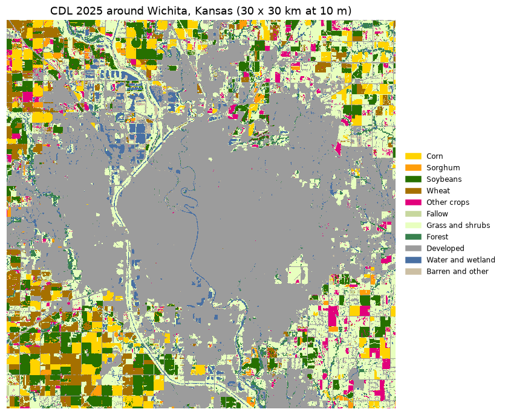
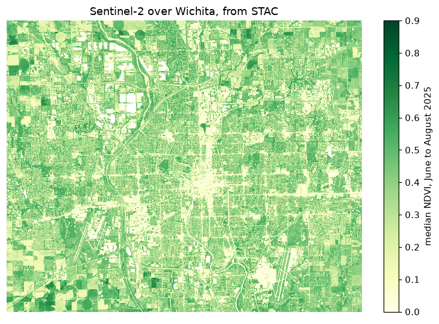

Most large spatial workflows spend more time reading and writing than computing. A slope calculation on the Great Plains DEM takes a fifth of a second on a GPU, but decoding the DEM from disk takes longer, and a 15 GB Cropland Data Layer cannot even be held in memory. How data are laid out on disk decides whether many workers can read them at once, whether a small window can be read without touching the rest, and whether a reader can skip files that lie outside the area of interest. This notebook reads and writes rasters (GeoTIFF, Cloud-Optimized GeoTIFF, Zarr, STAC catalogues) and vectors (GeoParquet, Shapefile, GeoPackage, partitioned datasets) with geolattice.distributed.io, and measures how layout and chunking change the speed.
Overview
Raster layouts
Format
Layout
Good for
Watch out for
GeoTIFF, striped
rows stored one after another
reading whole rows or the whole file
a small window still reads full rows
GeoTIFF, tiled
square blocks (here 128 x 128) stored independently
windows, parallel reads of blocks
chunks should be multiples of the block size
Cloud-Optimized GeoTIFF (COG)
tiled, plus internal overviews, with the header first
HTTP range requests from object storage, quick previews
written once; updating is awkward
Zarr
one compressed file (object) per chunk, plus JSON metadata
parallel reads and writes, cloud storage, n-dimensional cubes
many small objects if chunks are tiny
A Dask chunk that covers parts of several file blocks forces each task to read and decode blocks that other tasks also read. Chunks aligned to the storage blocks (equal to them or a whole multiple) avoid the duplicate work.
Vector layouts
Format
Parallel read
Spatial filter without reading everything
Shapefile, GeoPackage, FlatGeobuf (OGR)
by row ranges (each worker skips to its rows)
spatial index inside the file (GeoPackage, FlatGeobuf)
GeoParquet
one task per file or row group
per-file and per-row-group bounding box statistics (the bbox covering column, GeoParquet 1.1)
Partitioned GeoParquet
one task per file, files written in parallel
whole files skipped when their bounding box misses the query
Columnar storage also lets a reader take only the columns it needs. And when rows are written in Hilbert order, each file covers a compact area, so a bounding-box query touches few files.
STAC
A SpatioTemporal Asset Catalog lists satellite scenes and the URLs of their COG bands. A lazy reader (here odc-stac) turns a search result into an xarray cube whose chunks are read only when computed, directly from object storage.
Input and Output with GeoLattice
Function
Reads or writes
Parallelism
pdist.read_raster(path, chunks=)
any GDAL raster, lazily
one task per chunk; chunks="auto" uses plan_chunks; compute="gpu" gives CuPy chunks
pdist.write_raster(obj, path, format=)
"zarr", "gtiff", "cog"
Zarr chunks written in parallel; GeoTIFF chunk by chunk under a lock
Hilbert-sorted partitions written in parallel, with a bbox covering column
pdist.spatial_partition, pdist.partition_bounds
(helpers)
Hilbert order and per-partition bounding boxes
Learning objectives
Explain striped, tiled, COG and Zarr layouts, and GeoParquet row groups and partitions.
Read rasters lazily with chunks aligned to the file’s blocks, and measure the effect of misaligned chunks.
Read a small window of the 152 billion pixel CDL without reading the rest.
Write rasters to Zarr and COG, and compare read speed and size with the original GeoTIFF.
Load a lazy Sentinel-2 cube from a STAC catalogue.
Read and write partitioned GeoParquet, filter by bounding box, and compare GeoParquet with Shapefile and GeoPackage.
Treat 38 million taxi trips as a lazy Dask DataFrame.
Data
Dataset
Content
Great Plains covariates
15 rasters, 17,196 x 15,245, float32, tiled 128 x 128, uncompressed, 1.06 GB each
2025 CONUS CDL
316,295 x 480,509 pixels at 10 m (152 billion), uint8, 576 x 512 tiles, PackBits, 15 GB
Kansas building footprints
1.6 million polygons, 24 Hilbert-sorted GeoParquet files (notebook 00)
Sentinel-2 L2A
Planetary Computer STAC, Wichita, summer 2025
NYC yellow taxi trips 2023
one Parquet file, 38.3 million rows in 37 row groups
Files written here go to outputs/io/ and are deleted at the end (about 6 GB at the peak). Timings depend on whether files are already in the operating system’s page cache: the first read of a file comes from disk, repeated reads from memory. The comparisons below read every file once before timing, so they compare decoding and layout, not the disk.
Contents
Setup
Lazy rasters and block-aligned chunks
A window of the 152 billion pixel CDL
GeoTIFF, COG and Zarr compared
A multi-layer Zarr cube
A lazy Sentinel-2 cube from STAC
Partitioned GeoParquet
GeoParquet, Shapefile and GeoPackage
38 million taxi trips as a lazy table
Summary and exercises
Setup
Code
import warnings # warning controlwarnings.filterwarnings("ignore") # hide routine library warningsimport os # environment and CPU countimport time # wall-clock timingfrom pathlib import Path # file pathsimport matplotlib.pyplot as plt # figuresimport numpy as np # arraysimport pandas as pd # tablesimport geopandas as gpd # vector dataimport xarray as xr # labelled rastersimport geolattice # GeoLatticeimport geolattice.distributed as pdist # distributed and GPU spatial computingimport dist_data as dd # chapter helper: paths, cached downloads, timersplt.rcParams.update({"figure.dpi": 110}) # figure resolutionpd.set_option("display.width", 140) # wider printed tablesOUT = Path("outputs") # results and scratch files written by this chapterOUT.mkdir(exist_ok=True) # create it if neededcaps = pdist.capabilities() # engines and GPUs on this machineprint("GeoLattice", geolattice.__version__, "|", os.cpu_count(), "CPU cores |", caps["gpus"], "GPU(s)", # versionsf"({caps.get('gpu_memory_total', 0) /1e9:.0f} GB)"if caps["gpus"] else"") # GPU memoryimport shutil # remove scratch filesimport subprocess # gdal_translate for a striped copyimport dask # Dask configurationIO = OUT /"io"# scratch folder for this notebookIO.mkdir(parents=True, exist_ok=True) # create itdef folder_gb(p): # size of a file or folder on disk p = Path(p) # as a pathreturnsum(f.stat().st_size for f in p.rglob("*") if f.is_file()) /1e9if p.is_dir() else p.stat().st_size /1e9# bytes to GB
The Great Plains GeoTIFFs store 128 x 128 pixel blocks. pdist.read_raster with chunks="auto" asks pdist.plan_chunks for about 128 MB chunks; explicit chunks of 2048 are a multiple of the block, and 2000 are not.
Code
src = dd.GP_RASTERS /"elev.tif"# the DEMauto = pdist.read_raster(src) # chunks="auto"print("auto chunks:", auto.data.chunksize, "|", auto.data.npartitions, "chunks | lazy:", pdist.is_lazy(auto)) # planrows = [] # timingscases = [("DEM, uncompressed, 128 x 128 blocks", src, None, [((2048, 2048), True), ((2000, 2000), False)]), # file, window, chunkings ("CDL, PackBits, 512 x 576 blocks", dd.CDL, (slice(128000, 160768), slice(144000, 180864)), [((4096, 4608), True), ((4000, 4500), False)])]for name, path, window, chunkings in cases: # both filesfor ch, aligned in chunkings: # aligned first, then misaligned r = pdist.read_raster(path, masked=window isNone, chunks={"y": ch[0], "x": ch[1]}) # lazy raster r = r if window isNoneelse r[window] # a 33,000 x 37,000 pixel window of the CDLfloat(r.mean()) # warm the page cache t = time.perf_counter();float(r.mean()); sec = time.perf_counter() - t # read and reduce rows.append({"file": name, "chunks": f"{ch[0]} x {ch[1]}", "aligned": aligned, # description"tasks": r.data.npartitions, "seconds": round(sec, 2)}) # timepd.DataFrame(rows) # table
auto chunks: (5632, 5632) | 12 chunks | lazy: True
file
chunks
aligned
tasks
seconds
0
DEM, uncompressed, 128 x 128 blocks
2048 x 2048
True
72
0.73
1
DEM, uncompressed, 128 x 128 blocks
2000 x 2000
False
72
0.70
2
CDL, PackBits, 512 x 576 blocks
4096 x 4608
True
81
0.57
3
CDL, PackBits, 512 x 576 blocks
4000 x 4500
False
81
0.57
Alignment made no measurable difference here, for either file (in repeated runs the CDL times varied by up to a fifth in both directions). With misaligned chunks the blocks on chunk edges are read by two tasks, but GDAL keeps recently decoded blocks in its block cache, which all threads of this process share, so the second read is mostly a memory copy. The penalty appears where that cache does not help: with several worker processes (each has its own cache, and neighbouring chunks often go to different workers), and with COGs on object storage, where every misaligned edge block is an extra HTTP range request. Aligning chunks to blocks costs nothing, so it remains the safe default.
A window of the 152 billion pixel CDL
The 2025 CDL covers the conterminous United States at 10 m. Opened lazily, it is just a header; selecting a window by coordinates and computing reads only the blocks inside it.
Code
cdl = dd.cdl() # lazy uint8 DataArray, 8192 x 8192 chunksprint(f"{cdl.shape[0]:,} x {cdl.shape[1]:,} = {cdl.size /1e9:.0f} billion pixels, {dd.gb(cdl.nbytes)} as bytes,", # sizef"{cdl.data.npartitions:,} chunks, file {dd.gb(dd.CDL.stat().st_size)}") # on diskwichita = gpd.GeoSeries.from_xy([-97.34], [37.69], crs=4326).to_crs(5070).iloc[0] # Wichita, Kansas in EPSG:5070win = cdl.sel(x=slice(wichita.x -15000, wichita.x +15000), y=slice(wichita.y +15000, wichita.y -15000)) # 30 x 30 kmwith dd.timer("read a 30 x 30 km window (9 million pixels)"): # only the blocks in the window win = win.compute() # into memoryprint(win.shape, f"{win.nbytes /1e6:.0f} MB", "| process memory", f"{dd.rss_gb():.1f} GB") # small
316,295 x 480,509 = 152 billion pixels, 151.98 GB as bytes, 2,301 chunks, file 14.92 GB
read a 30 x 30 km window (9 million pixels): 0.18 s
(3000, 3000) 9 MB | process memory 8.5 GB
Code
codes, counts = np.unique(win.values, return_counts=True) # pixels per CDL codetop = pd.Series(counts, index=codes).sort_values(ascending=False).head(6) # the six most commonnames = {1: "Corn", 4: "Sorghum", 5: "Soybeans", 24: "Winter wheat", 61: "Fallow", 111: "Water", 121: "Developed, open", # CDL legend122: "Developed, low", 123: "Developed, medium", 124: "Developed, high", 141: "Deciduous forest", 176: "Grass/pasture"} # namesprint((top / win.size *100).round(1).rename(index=lambda c: f"{c}{names.get(c, '')}").to_string()) # shares in percentfig, ax = plt.subplots(figsize=(8.5, 6.5)) # one mapdd.cdl_groups_plot(ax, win.values, extent=dd.extent(win)) # codes drawn as land cover groupsax.set_title("CDL 2025 around Wichita, Kansas (30 x 30 km at 10 m)"); ax.set_axis_off(); plt.tight_layout(); plt.show() # draw
122 Developed, low 23.4
176 Grass/pasture 19.6
123 Developed, medium 17.0
121 Developed, open 6.8
124 Developed, high 5.7
5 Soybeans 5.1

Reading the window took a fraction of a second and a few megabytes, out of 152 GB. Laziness plus a tiled, indexed file format is what makes a continental 10 m product usable on a laptop. Notebook 03 goes further and processes every pixel of the CDL, chunk by chunk.
GeoTIFF, COG and Zarr compared
The DEM is rewritten four ways: a striped GeoTIFF (gdal_translate -co TILED=NO), a tiled DEFLATE GeoTIFF (format="gtiff"), a COG with overviews (format="cog") and a Zstandard compressed Zarr store (format="zarr"). Then each is read whole, and 200 random 256 x 256 windows are read from each.
write tiled DEFLATE GeoTIFF: 14.11 s
write COG: 17.92 s
write Zarr: 1.03 s
Code
import rasterio # direct windowed reads of GeoTIFFsimport zarr # direct reads of Zarr chunksfrom rasterio.windows import Window # a rectangle of rows and columnsrng = np.random.default_rng(0) # random windowswins = [(int(r), int(c)) for r, c inzip(rng.integers(0, dem.shape[0] -256, 200), rng.integers(0, dem.shape[1] -256, 200))] # cornersdef open_any(p): # lazy DataArray for any of the formatsif p.suffix ==".zarr": # Zarr storereturn pdist.read_zarr(p)["elev"] # its variablereturn pdist.read_raster(p, chunks={"y": 2048, "x": 2048}) # GeoTIFF or COGdef read_windows(p): # 200 windows read straight from the file, without Daskif p.suffix ==".zarr": # Zarr: slicing reads only the chunks that overlap arr = zarr.open(str(p), mode="r")["elev"] # the arrayfor r, c in wins: # each window arr[r:r +256, c:c +256] # read itelse: # GeoTIFF or COG through GDALwith rasterio.open(p) as f: # one open file handlefor r, c in wins: # each window f.read(1, window=Window(c, r, 256, 256)) # read itrows = [] # one row per formatfor name, p in paths.items(): # each formatfloat(open_any(p).mean()); read_windows(p) # warm the page cache t = time.perf_counter();float(open_any(p).mean()); whole = time.perf_counter() - t # read everything, in parallel t = time.perf_counter(); read_windows(p); windows = time.perf_counter() - t # 200 small windows, one after another rows.append({"format": name, "size GB": round(folder_gb(p), 2), "read whole, 24 threads (s)": round(whole, 2), # size and time"200 windows of 256 x 256 (ms each)": round(windows /len(wins) *1000, 2)}) # windowed readsfmt = pd.DataFrame(rows).set_index("format") # tablefmt # show
size GB
read whole, 24 threads (s)
200 windows of 256 x 256 (ms each)
format
GeoTIFF tiled, uncompressed (original)
1.06
0.69
0.14
GeoTIFF striped
1.05
0.71
0.85
GeoTIFF tiled, DEFLATE
0.12
0.71
0.69
COG, DEFLATE
0.26
0.74
1.25
Zarr, Zstandard
0.14
0.43
9.79
Compression shrank the DEM about eightfold (half the pixels are NaN and elevations vary smoothly), yet whole-file reads were no slower, because 24 threads decompress in parallel. Small windows tell the formats apart. The original tiled GeoTIFF read a 256 x 256 window in about a tenth of a millisecond, touching only the few 128 x 128 blocks under it. The striped copy took about six times longer, because every window reads 256 complete rows of 15,245 pixels. The compressed tiled files pay for decompressing their blocks (the COG’s larger 512 x 512 blocks cost more per window). The Zarr store was slowest by far for windows: its chunks are 2048 x 2048, so every small window decompresses a whole 16 MB chunk. The writes differ too: GeoTIFF and COG were written chunk by chunk under a lock, Zarr’s independent chunk files in parallel. Zarr suits the intermediate results of a Dask pipeline (use chunks near the size of the windows you will read); COG is the format to publish, since any HTTP client can read its windows and overviews.
A multi-layer Zarr cube
Several rasters on one grid fit naturally in one Zarr store, with one variable per layer. “On one grid” has to be checked, though. The 15 Great Plains files have the same resolution but not the same origin or size:
Code
grids = [] # one row per filefor f insorted(dd.GP_RASTERS.glob("*.tif")): # every covariate filewith rasterio.open(f) as r: # header only grids.append({"file": f.stem, "rows": r.height, "cols": r.width, "x origin": r.transform.c, "y origin": r.transform.f}) # gridgrids = pd.DataFrame(grids).set_index("file") # tableref = grids.loc["elev"] # the reference gridgrids["dx to elev (m)"] = (grids["x origin"] - ref["x origin"]).round(1) # origin offsetsgrids["dy to elev (m)"] = (grids["y origin"] - ref["y origin"]).round(1) # origin offsetsgrids.groupby(["rows", "cols", "dx to elev (m)", "dy to elev (m)"]).apply(lambda g: ", ".join(g.index), include_groups=False).rename("files").reset_index() # distinct grids
rows
cols
dx to elev (m)
dy to elev (m)
files
0
17194
15245
14.2
-138.1
frg
1
17195
15246
14.9
-35.5
kfactor, silt_clay
2
17196
15245
0.0
0.0
aspect, elev, h_curvature, slope, slopeleng, t...
3
17196
15246
-5.8
-38.1
nlcd, preci, temp
4
17196
15246
10.1
-38.1
ndvi
Five different grids: most origins differ from the elevation grid by 6 to 38 m (less than half a 90 m pixel), the forest fragmentation layer by 138 m (one and a half pixels), and some files have an extra row or column. The files were clearly meant to share the elevation grid, but xarray aligns layers by their coordinate labels, and with these offsets no labels match: an expression such as ndvi * preci would silently return an empty array or a doubled, mostly NaN grid. The chapter helper dd.gp_raster therefore snaps every layer to the elevation grid by nearest pixel (a whole-pixel slice plus NaN padding, still lazy). Check the grids of any raster stack before combining layers.
Code
layers = ["ndvi", "preci", "temp", "silt_clay"] # four covariates on three different gridscube = xr.Dataset({n: dd.gp_raster(n, chunks={"y": 2048, "x": 2048}) for n in layers}) # lazy Dataset, snapped to one gridfor n in layers: # drop per-file attributes that would clash cube[n].attrs = {} # keep the store tidyprint("cube grid equals the DEM grid:", cube.sizes ==dict(zip(("y", "x"), dem.shape))) # one grid nowwith dd.timer("write 4 layers (4.2 GB of float32) to Zarr"): # in parallel pdist.write_raster(cube, IO /"gp_cube.zarr") # one store, four arrayszc = pdist.read_zarr(IO /"gp_cube.zarr") # lazy againprint(zc) # its contentsprint(f"on disk {folder_gb(IO /'gp_cube.zarr'):.2f} GB in {sum(1for _ in (IO /'gp_cube.zarr').rglob('*') if _.is_file())} files") # size and objects
cube grid equals the DEM grid: True
write 4 layers (4.2 GB of float32) to Zarr: 3.52 s
<xarray.Dataset> Size: 4GB
Dimensions: (y: 17196, x: 15245)
Coordinates:
* y (y) float64 138kB 2.539e+06 2.539e+06 ... 9.92e+05 9.919e+05
* x (x) float64 122kB -1.25e+06 -1.25e+06 ... 1.216e+05 1.217e+05
Data variables:
ndvi (y, x) float32 1GB dask.array<chunksize=(2048, 2048), meta=np.ndarray>
preci (y, x) float32 1GB dask.array<chunksize=(2048, 2048), meta=np.ndarray>
silt_clay (y, x) float32 1GB dask.array<chunksize=(2048, 2048), meta=np.ndarray>
spatial_ref int64 8B ...
temp (y, x) float32 1GB dask.array<chunksize=(2048, 2048), meta=np.ndarray>
on disk 0.13 GB in 275 files
Code
with dd.timer("mean of every layer from the Zarr cube"): # one parallel passprint({k: round(float(v), 2) for k, v in zc.mean().items()}) # four meanswith dd.timer("the same from the four GeoTIFFs"): # four filesprint({n: round(float(dd.gp_raster(n).mean()), 2) for n in layers}) # four means
{'ndvi': 0.4, 'preci': 483.84, 'silt_clay': 53.9, 'spatial_ref': 0.0, 'temp': 9.19}
mean of every layer from the Zarr cube: 1.59 s
{'ndvi': 0.4, 'preci': 483.84, 'temp': 9.19, 'silt_clay': 53.9}
the same from the four GeoTIFFs: 2.94 s
A lazy Sentinel-2 cube from STAC
pdist.read_stac loads STAC items lazily with odc-stac. The search below finds Sentinel-2 scenes over Wichita with little cloud in summer 2025; the cube is built from the catalogue metadata alone, and only the pixels needed for the median NDVI are downloaded.
clear = s2.SCL.isin([4, 5]) # vegetation and bare soil classes of the scene classificationndvi = ((s2.B08.astype("float32") - s2.B04) / (s2.B08.astype("float32") + s2.B04)).where(clear) # NDVI of clear pixelswith dd.timer("download the needed chunks and compute the median NDVI"): # reads happen here med = ndvi.median("time").compute() # median over the summerfig, ax = plt.subplots(figsize=(7, 5)) # one mapim = med.plot.imshow(ax=ax, cmap="YlGn", vmin=0, vmax=0.9, add_colorbar=False) # mapplt.colorbar(im, ax=ax, label="median NDVI, June to August 2025"); ax.set_title("Sentinel-2 over Wichita, from STAC"); ax.set_axis_off() # labelsplt.tight_layout(); plt.show() # draw
download the needed chunks and compute the median NDVI: 5.13 s

Partitioned GeoParquet
The Kansas buildings were written by pdist.write_vector as 24 Hilbert-sorted GeoParquet files, each with a bbox covering column. pdist.read_vector reads a folder with one task per file; with bbox= each file’s statistics decide whether it is opened at all.
Code
files =sorted(dd.BUILDINGS.glob("*.parquet")) # the partition filesprint(len(files), "files,", f"{folder_gb(dd.BUILDINGS):.2f} GB") # dataset sizet = {} # timingswith dd.timer("read all 24 files in parallel", t): # one task per file bld = pdist.read_vector(dd.BUILDINGS) # GeoDataFramewith dask.config.set(scheduler="synchronous"): # one file at a timewith dd.timer("read all 24 files one after another", t): # for comparison pdist.read_vector(dd.BUILDINGS) # same resultwith dd.timer("read only buildings in a Wichita bounding box", t): # filtered read wich = pdist.read_vector(dd.BUILDINGS, bbox=bbox) # row groups outside the box are skippedprint(f"{len(bld):,} buildings in all; {len(wich):,} in the Wichita box") # sizes
24 files, 0.19 GB
read all 24 files in parallel: 2.28 s
read all 24 files one after another: 2.07 s
read only buildings in a Wichita bounding box: 0.88 s
1,605,334 buildings in all; 159,731 in the Wichita box
Reading the 24 files on 24 threads was no faster than reading them one after another. Most of the time goes into turning the stored WKB bytes into Shapely geometry objects, and that step holds the GIL, so the threads take turns. (Worker processes would decode in parallel, but then pay to send 1.6 million geometries back to this process.) What does help is reading less: the bounding-box read decoded only the buildings near Wichita and was faster. To see why the Hilbert order matters, the next cell writes the same buildings in two ways (Hilbert-sorted and in random order) and repeats the bounding-box query on both.
Code
shuffled = bld.sample(frac=1, random_state=0) # rows in random orderpdist.write_vector(bld, IO /"bld_hilbert", npartitions=48) # 48 Hilbert-sorted filespdist.write_vector(shuffled, IO /"bld_random", npartitions=48, spatial=False) # 48 files in random orderimport pyarrow.parquet as pq # Parquet metadatafor name in ["bld_hilbert", "bld_random"]: # both layouts fs =sorted((IO / name).glob("*.parquet")) # its files hit =0# files whose bbox statistics overlap the query boxfor f in fs: # each file st = pq.ParquetFile(f).metadata.row_group(0) # first row group statistics cols = {st.column(i).path_in_schema: st.column(i).statistics for i inrange(st.num_columns)} # by column x0, y0 = cols["bbox.xmin"].min, cols["bbox.ymin"].min# lower left of the file x1, y1 = cols["bbox.xmax"].max, cols["bbox.ymax"].max# upper right hit +=not (x1 < bbox[0] or x0 > bbox[2] or y1 < bbox[1] or y0 > bbox[3]) # overlaps the query? t0 = time.perf_counter(); n =len(pdist.read_vector(IO / name, bbox=bbox)); s = time.perf_counter() - t0 # the queryprint(f"{name:12s} files read for the Wichita box: {hit:2d} of {len(fs)} | {n:,} buildings in {s:.2f} s") # result
bld_hilbert files read for the Wichita box: 10 of 48 | 159,731 buildings in 1.74 s
bld_random files read for the Wichita box: 48 of 48 | 159,731 buildings in 1.64 s
Both layouts return the same buildings. In random order every file spans the whole state, so all 48 files must be opened and filtered; Hilbert-sorted, only 10 files overlap Wichita. Locally both queries took the same time, because the files sit in the page cache and decoding the 160,000 matching geometries dominates. On object storage (S3, Azure Blob) every file is a separate download, and reading 10 files instead of 48 is what makes a query fast.
GeoParquet, Shapefile and GeoPackage
The same 400,000 buildings in three formats. For OGR formats pdist.read_vector splits the file into row ranges and reads them in parallel with pyogrio.
Code
sub = bld.iloc[:400_000].reset_index(drop=True) # 400,000 buildingssub.to_parquet(IO /"b400k.parquet") # GeoParquetsub.to_file(IO /"b400k.shp", engine="pyogrio") # Shapefilesub.to_file(IO /"b400k.gpkg", engine="pyogrio") # GeoPackagerows = [] # timingsfor name, p in [("GeoParquet", IO /"b400k.parquet"), ("Shapefile", IO /"b400k.shp"), ("GeoPackage", IO /"b400k.gpkg")]: # formats gpd.read_file(p) if p.suffix !=".parquet"else gpd.read_parquet(p) # warm the cache t0 = time.perf_counter(); gpd.read_parquet(p) if p.suffix ==".parquet"else gpd.read_file(p, engine="pyogrio"); one = time.perf_counter() - t0 # plain GeoPandas t0 = time.perf_counter(); g = pdist.read_vector(p, npartitions=8); par = time.perf_counter() - t0 # GeoLattice, parallel where possible rows.append({"format": name, "size MB": round(folder_gb(p) *1000if p.suffix !=".shp"elsesum(f.stat().st_size for f in IO.glob("b400k.*") if f.suffix in (".shp", ".shx", ".dbf", ".prj")) /1e6, 1), # size"GeoPandas (s)": round(one, 2), "pdist.read_vector (s)": round(par, 2), "rows": len(g)}) # timespd.DataFrame(rows).set_index("format") # table
size MB
GeoPandas (s)
pdist.read_vector (s)
rows
format
GeoParquet
31.8
0.27
0.42
400000
Shapefile
71.8
0.48
0.75
400000
GeoPackage
93.1
0.60
0.73
400000
With plain GeoPandas, GeoParquet read 400,000 buildings fastest, in about a quarter of a second, ahead of the Shapefile and the GeoPackage. Splitting the files into row ranges with pdist.read_vector made every format slower here, for the same reason as above: building Shapely objects holds the GIL, so parallel tasks only add overhead. (These sub-second timings vary from run to run.) GeoParquet’s other advantages matter as much: it is less than half the size of the others, readers can take only the columns they need, and it can be partitioned and filtered by bounding box. Convert large vector data to GeoParquet once, and partition it.
38 million taxi trips as a lazy table
Not every big table has geometries. The 2023 NYC yellow taxi trips (38.3 million rows) are one Parquet file with 37 row groups; read with Dask, each row group is a partition, and grouped counts run in parallel without loading the file into one DataFrame. Notebook 04 joins them to the taxi zones.
Code
trips = dd.taxi_trips(columns=["PULocationID", "DOLocationID", "trip_distance", "total_amount"]) # lazy Dask DataFrameprint(trips.npartitions, "partitions | lazy:", pdist.is_lazy(trips)) # one per row groupwith dd.timer("count trips and mean fare by pickup zone (38 million rows)"): # grouped reduction by_zone = trips.groupby("PULocationID").agg({"trip_distance": "count", "total_amount": "mean"}).compute() # small resultby_zone.columns = ["trips", "mean_fare"] # readable namesprint(f"{int(by_zone.trips.sum()):,} trips over {len(by_zone)} pickup zones") # totalsby_zone.sort_values("trips", ascending=False).head(5).round(2) # busiest zones
37 partitions | lazy: True
count trips and mean fare by pickup zone (38 million rows): 0.39 s
38,310,226 trips over 263 pickup zones
trips
mean_fare
PULocationID
132
1992304
78.07
237
1791795
20.44
161
1766041
24.95
236
1596584
21.08
162
1353753
24.18
Code
shutil.rmtree(IO) # remove the scratch files written aboveprint("removed", IO) # done
removed outputs/io
Summary and exercises
Lazy readers open the header only; a window of the 152 billion pixel CDL was read in a fraction of a second because only its blocks were decoded.
Chunks should be multiples of the file’s blocks. Here GDAL’s block cache hid the cost of misaligned chunks; with worker processes or object storage it does not.
The 15 Great Plains rasters lie on four slightly different grids; layers must be snapped to one grid before they are combined.
Striped GeoTIFFs suit whole-file reads, tiled GeoTIFFs and COGs suit windows, and Zarr suits parallel writes and reads of intermediate results and multi-layer cubes.
pdist.read_stac builds a lazy cube from catalogue metadata and downloads only what a computation needs.
Partitioned, Hilbert-sorted GeoParquet with a bbox column lets bounding-box queries skip most files. Decoding geometries holds the GIL, so reading fewer of them beats reading them on more threads. GeoParquet was the smallest format and the fastest to read.
A Parquet table of 38 million rows is a lazy Dask DataFrame with one partition per row group.
Exercises
Write the DEM to Zarr with 512, 2048 and 8192 pixel chunks. How do the number of files, the write time and the time to read 200 random windows change?
Read the CDL window around Wichita with chunks={"y": 576, "x": 512} (the file’s blocks) and with {"y": 600, "x": 600}. Compare the times.
Repeat the Sentinel-2 search for winter 2024-25 and map the difference in median NDVI.
Write the buildings with partition_on set to a column of your choice (for example a size class from pdist.vector.area) and inspect the folder structure that results.